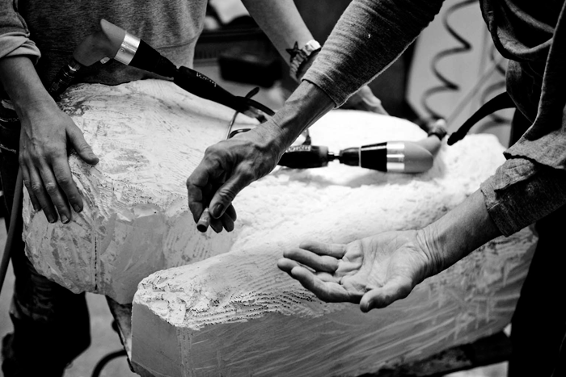

Photos by Rahi Rezvani
{kind=link}
{kind=link}
{kind=link}
{kind=link}
{kind=link}
{kind=link}
{kind=link}
{kind=link}
{kind=link}
{kind=link}
{kind=link}
{kind=link}
{kind=link}
{kind=link}
{kind=link}
{kind=link}
{kind=link}
{kind=link}
{kind=link}
{kind=link}
{kind=link}
{kind=link}
{kind=link}
{kind=link}
{kind=link}
{kind=link}
{kind=link}
{kind=link}
"Together creating sculptures, in a sea of deafening silence and calming turbulence. Like a shell both parts combine into one. This is how I see Michèle and Bibi."
Jan Cremer - Writer and Painter
"Bibi and Michèle complete one another, automatically complementing and fusing their energies. Just as naturally they see into each other's brains while working and don't shy away from building on each other's thoughts.
They work and create together in a way that gives new meaning to the words "working together". What Michèle and Bibi do strikes me as completely unique."
Simon Levie - Director Rijksmuseum (former)
"Michèle and Bibi's amazing collaboration forces us to consider not so much the emotions that connect them, but the spark of creativity that ignites them."
Rattan Chadda - Contemporary art collector
"Working on something that had been thought-through together was an intense revelation. It became a totally symbiotic experience, based upon unconditional trust. They were operating on the same creative frequency. Where one finished, the other continued, creating a perfect flow, giving an extra dimension to their combined effort."
Melanie van Ogtrop - Art historian
Press
Online
30-09-2010: Mother and Daughter Artist - Michèle Deiters and Bibi van der Velden, TheCoolhunter.net
24-09-2010: Confronting Time, bright.nl
21-09-2010: Kunst van moeder en dochter, uitnieuws.nl
03-08-2010: Confronting Time, agenda-uitgaan.nl
03-08-2010: Confronting Time By Bibi Michèle, framemag.com
31-05-2010: Bibi Michèle: Confronting Time, excellentlevenenwonen.nl
Hardcopy
01-09-2010: Studio White Space, De Tentoonstellingsagenda
01-09-2010: Ontmoetingen met de tijd, Tableau
01-09-2010: Studio White Space, Fjoezzz
01-09-2010: Bibi Michèle: Confronting Time, Fjoezzz
01-09-2010: Zo moeder, zo dochter, Eigen Huis & Interieur
{kind=link}
{kind=link}
Book
Whitespace
M.J. Kosterstraat 18
1017 VZ, Amsterdam
The Netherlands
t. +31(0)20 - 6269095
info@bibimichele.com
Studio Whitespace curated by Ron Mandos
6 october 2010 -
21 november 2010 (sun)
wednesday - saturday
10:00 - 17:00
Otherwise by appointment
Mother and daughter, lauded Sculptor and acclaimed multimedia designer. Experience and optimism. Serenity and fire. Wisdom and why? United in the quest for conceptual perfection, quality, evocation and meaning, together with the combined ferocity of their execution.
White Space Studio Amsterdam, where Bibi and Michèle work together and apart, along with their mid-forest retreat. Le Chambon in France's Drôme departement hosted the many, many hours that brought this collection to fruition.
"Confronting Time" seeks to do exactly that. To literally explore perspectives of time; time past, time eternal, time perceived, time frozen, time shared and so on, influenced by its inevitability and transience.
"Confronting Time" comprises of a series of mixed- media artworks and installations where the viewer is confronted with themselves through reflection and abstracted traditional forms applied through contemporary materials.
Bibi said "we capture and freeze moments in time" Michèle continued " to first confront the viewer then provoke them to reflect on the many facets of 'real' and perceived time."
Bibi and Michèle struck an effervescent equilibrium that strengthened their abilities to explore further their own conceptual and creative processes while fusing their individual experiences and disciplines. "We became "BibiMichèle" they exclaimed.
Their work reflects the contradictions in the ebbing and flowing of time itself in all its human manifestations.
White Space Studio Amsterdam, where Bibi and Michèle work together and apart, along with their mid-forest retreat. Le Chambon in France's Drôme departement hosted the many, many hours that brought this collection to fruition.
"Confronting Time" seeks to do exactly that. To literally explore perspectives of time; time past, time eternal, time perceived, time frozen, time shared and so on, influenced by its inevitability and transience.
"Confronting Time" comprises of a series of mixed- media artworks and installations where the viewer is confronted with themselves through reflection and abstracted traditional forms applied through contemporary materials.
Bibi said "we capture and freeze moments in time" Michèle continued " to first confront the viewer then provoke them to reflect on the many facets of 'real' and perceived time."
Bibi and Michèle struck an effervescent equilibrium that strengthened their abilities to explore further their own conceptual and creative processes while fusing their individual experiences and disciplines. "We became "BibiMichèle" they exclaimed.
Their work reflects the contradictions in the ebbing and flowing of time itself in all its human manifestations.